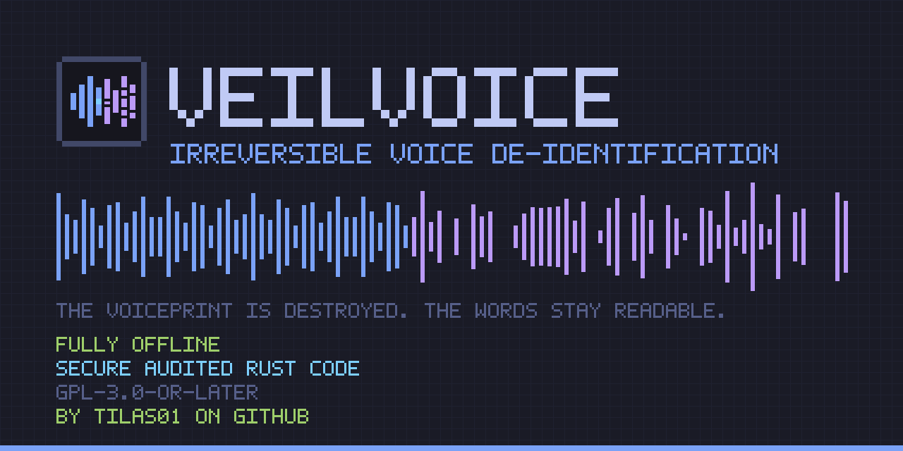

Irreversible voice de-identification — fully offline.
VeilVoice destroys the biometric voiceprint of a speaker — pitch, formants, timbre, micro-timing and the melody of an accent — so that neither software nor a human can re-identify them or reconstruct the original voice, while the words stay clean and transcribable.
This is the JavaScript-free edition. It exists because refusing to run unknown code is a reasonable position, particularly on a site about not being identified, and “turn scripts on or leave” is a rude answer to it.
The main site is better, and here is the honest reason why. Two features need JavaScript and cannot be faked without it:
sha256sum is a program you already trust.If your concern is malicious script, note that the main site loads no third-party code at all: no CDN, no analytics, no web fonts, no tag manager. Every script is served from the same origin and is short enough to read in a few minutes: verify.js, theme.js, markdown.js, repo.js, legal.js. Read them, then decide. Or stay here — this page is complete, and it is not a lesser tier of information.
The colour schemes above work without JavaScript, using radio
inputs and a CSS :has() selector. If your browser does not support
it, you keep Tokyo Night and nothing else changes.
| Anonymise a recording | wav, mp3, flac, ogg, m4a in — a clean WAV out, metadata stripped. Around 90× faster than real time. |
|---|---|
| Scramble live | Route the veiled voice into a virtual audio cable; every application on the machine receives it instead of you. |
| Encrypt at rest | X25519 + ML-KEM-768 hybrid, so a recording captured today is not readable by a quantum adversary tomorrow. |
| Strip metadata | Audio tags, image EXIF and GPS. |
| Rust library | Every crate is a normal dependency; the engine is allocation-free and callback-safe. |
Latest release — builds for Windows, macOS (Apple Silicon and Intel) and Linux.
Or build it; a fresh clone needs no secrets:
git clone https://github.com/tilas01/veilvoice
cd veilvoice
cargo build --releaseDo this. A download can be corrupted in transit or replaced entirely.
sha256sum -c SHA256SUMS --ignore-missingOn macOS: shasum -a 256 -c SHA256SUMS --ignore-missing.
On Windows PowerShell: Get-FileHash .\veilvoice-*.zip -Algorithm SHA256
and compare by eye against SHA256SUMS.
gpg --import veilvoice-signing-key.asc
gpg --verify SHA256SUMS.asc SHA256SUMSThe signature must name this exact key. “Good signature” from some other key means nothing at all:
8101 FB3B B28D 02FB 239E 0CDF 9CC1 C7E7 A9B5 833AThe key's user ID is exactly tilas01, with no
e-mail address attached. Public key.
Releases are bit-for-bit reproducible. Build the tagged commit and compare:
git checkout v0.1.1
export SOURCE_DATE_EPOCH=$(git log -1 --pretty=%ct)
cargo build --release --locked
sha256sum target/release/veilvoiceSignatures are detached and cover only the hash list — no binary is ever modified by signing, which is what lets it stay reproducible.
| Phase discard | Every frame's measured phase is thrown away and a synthetic one generated. Phase encodes the exact waveform and micro-timing. Infinitely many waveforms share any magnitude spectrogram. |
|---|---|
| Many-to-one normalisation | Pitch register, vocal-tract length and spectral tilt are each collapsed onto one canonical value. A whole population maps to the same output, so there is nothing to invert. |
| CSPRNG modulation | The residual transform changes every frame from a ChaCha20 stream seeded by the OS CSPRNG, held in page-locked memory and zeroized on drop. |
| Argon2id | Memory-hard password hashing (RFC 9106). Cost parameters travel with the file so old files still open. |
|---|---|
| X25519 + ML-KEM-768 | Hybrid: an attacker must break both. Guards against harvest-now-decrypt-later. |
| XChaCha20-Poly1305 | 192-bit random nonces remove the counter-management failure mode entirely. |
| Authenticated header | The stored KDF cost cannot be downgraded to make cracking cheap. |
| Amnesic memory | Keys are page-locked out of swap, zeroized on drop, compared in constant time. |
unsafe anywhere — every crate carries #![forbid(unsafe_code)].It does not hide what you said. Intelligibility is preserved on purpose; the words are in the output and can be transcribed. If the message itself is sensitive, encrypt it, or do not send it.
VeilVoice is free software under the GNU General Public License v3 or later. You may run it for any purpose, study it, change it and redistribute it, including commercially. If you distribute a modified version you must publish your changes under the same licence. It is provided with absolutely no warranty.
This project was developed with AI assistance (Claude, by Anthropic) and has been reviewed and audited by tilas01. That is a maintainer audit: no external firm or independent researcher has reviewed this code. It is disclosed so you can judge how much to verify before relying on it — the source is published under the GPL precisely so that you can.
Using this website, the repository, the released binaries or any output they produce constitutes your binding agreement to these terms in full. There is no tick box on this page, because a tick box needs JavaScript; reading this section is the same agreement.
Full texts: disclaimer and liability waiver · the licence in plain English · GPL-3.0 full text
Privacy of this page. Static HTML on GitHub Pages. No cookies, no storage, no analytics, no fonts, no scripts, nothing fetched from anywhere else. Your theme choice is not even remembered — there is no JavaScript to remember it with, and that is the trade.